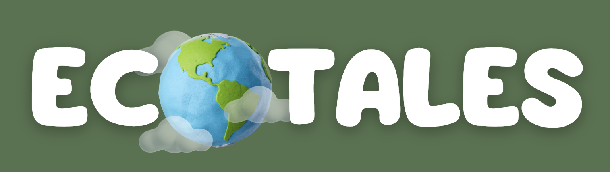
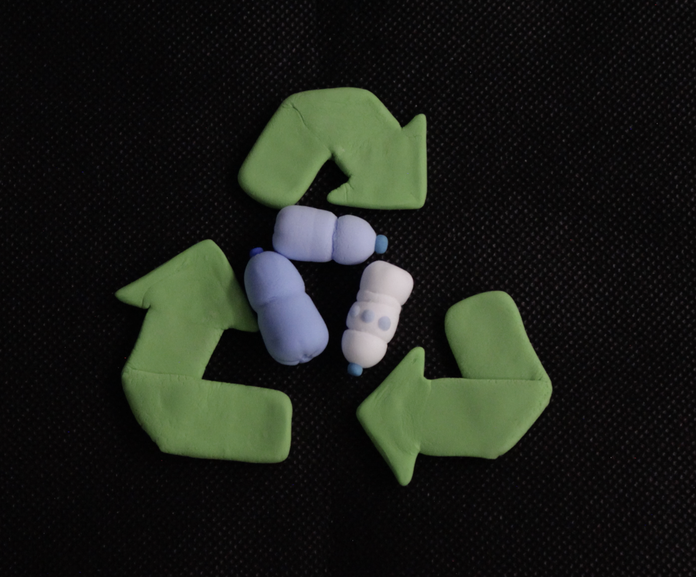
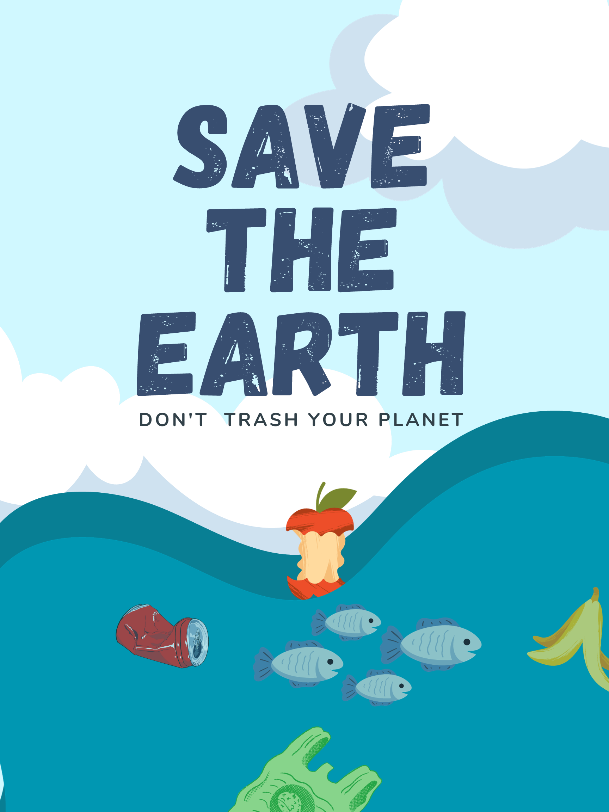

About the project
Friendly videos about serious environmental issues
The modern world faces serious environmental challenges, including water and air pollution, extinction of animals and plants, and climate change. According to UNEP research, up to 80% of ocean waste is made up of plastic products, such as bottles, bags, and cups. Despite growing attention to this issue, many people still underestimate its impact. We believe children should learn about environmental protection early to help preserve our planet for future generations. EcoTales is a multilingual interactive project designed to develop eco-thinking in children aged 3 to 10.

About me
Let us get to know each other better

Amelia
Producer, animator, sound designer, developer
Hi! My name is Amelia, I am 18 years old and I study at Innopolis University. I care deeply about environmental protection, and I believe that even as children, we can do a lot to help our planet.
Episodes
Episode 1: Water pollution
Related article
In recent years, water pollution caused by plastic has become a major concern. People use more plastic bottles, bags, containers, and other disposable items every day. Plastic does not decompose quickly and can release harmful substances that affect both human health and ecosystems.
Plastic-contaminated water may cause many health problems. Children who drink polluted water are at higher risk of diseases such as diarrhea, hepatitis, and cholera. In addition, toxic particles from plastic can increase long-term health risks. Teaching children safe and responsible habits is one of the most practical ways to reduce this threat.

To protect children from the harmful effects of plastic pollution, families should build simple daily habits: choose reusable steel or glass bottles, avoid leaving trash near water, and reduce single-use packaging whenever possible. These small actions make environmental care clear and practical for children.
More articles
How to teach?
How to build eco-friendly habits in children
Eco Materials
Choose a topic, language, and material type
Result
Recent requests